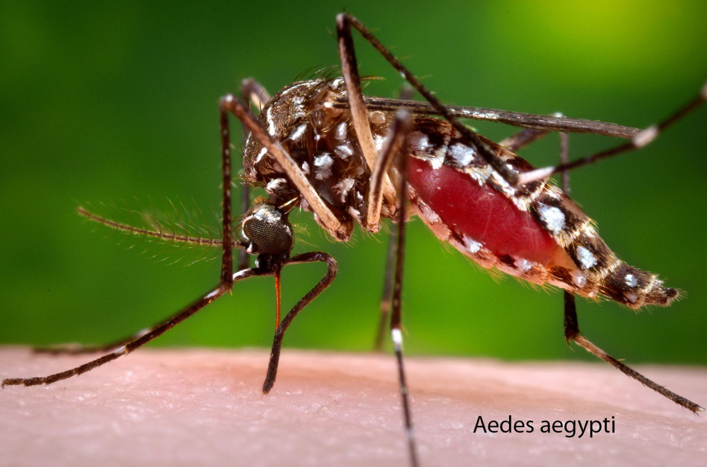
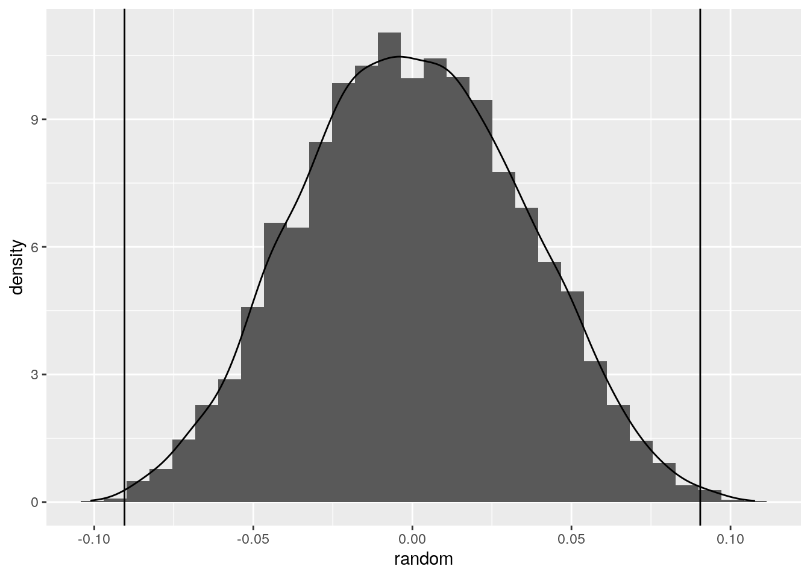

I used the HW 6 example for the mosquito weight for the Aedes aegypti species. I chose to upload the vector of mosquito weights onto python, assigning the objects as “females” and “males” accordingly. I also calculated the mean of these weights through python. Next, I reticulated this vector into R. I then had to converted the python objects into numeric R objects since I believe the orginial object were being interpreted as factors. Next, I created the same random distribution as seen in the homework and then I calculated the mean difference as my test statistic. The p-value was shown to be signifcant at a value of 0.0034. I then incorporate a plot visualizing the null distribution and the test statistic.

library(reticulate)females = [0.291, 0.208, 0.241, 0.437, 0.228, 0.256, 0.208, 0.234, 0.320, 0.340, 0.150]
males = [0.185, 0.222, 0.149, 0.187, 0.191, 0.219, 0.132, 0.144, 0.140]
sum(females)/len(females)## 0.2648181818181818sum(males)/len(males)## 0.17433333333333334library(ggplot2)
library(dplyr)##
## Attaching package: 'dplyr'## The following objects are masked from 'package:stats':
##
## filter, lag## The following objects are masked from 'package:base':
##
## intersect, setdiff, setequal, unionFemale <- as.numeric(py$females)
Male <- as.numeric(py$males)
set.seed(348)
dat <- data.frame(sex = c(rep("Female", 11), rep("Male", 9)), weight = c(Female, Male))
head(dat)## sex weight
## 1 Female 0.291
## 2 Female 0.208
## 3 Female 0.241
## 4 Female 0.437
## 5 Female 0.228
## 6 Female 0.256random <- vector()
for (i in 1:5000) {
rand.dat <- data.frame(weight = sample(dat$weight), sex = dat$sex)
random[i] <- mean(rand.dat[rand.dat$sex == "Male", ]$weight) - mean(rand.dat[rand.dat$sex == "Female", ]$weight)
}
dat %>% group_by(sex) %>% summarize(means = mean(weight)) %>%
summarize("mean.diff" = diff(means))## # A tibble: 1 x 1
## mean.diff
## <dbl>
## 1 -0.0905mean(random > 0.09048485 | random < -0.09048485)## [1] 0.0034data.frame(random) %>%ggplot(aes(random)) + geom_histogram(aes(y=..density..)) + geom_density() + geom_vline(xintercept = 0.09048485) + geom_vline(xintercept = -0.09048485)## `stat_bin()` using `bins = 30`. Pick better value with `binwidth`.